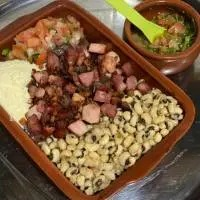
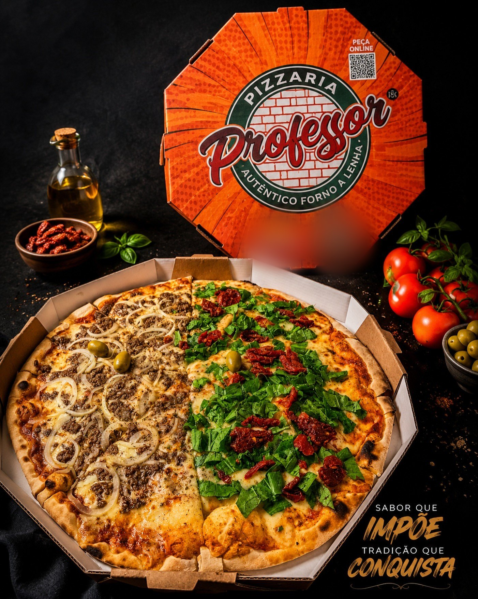
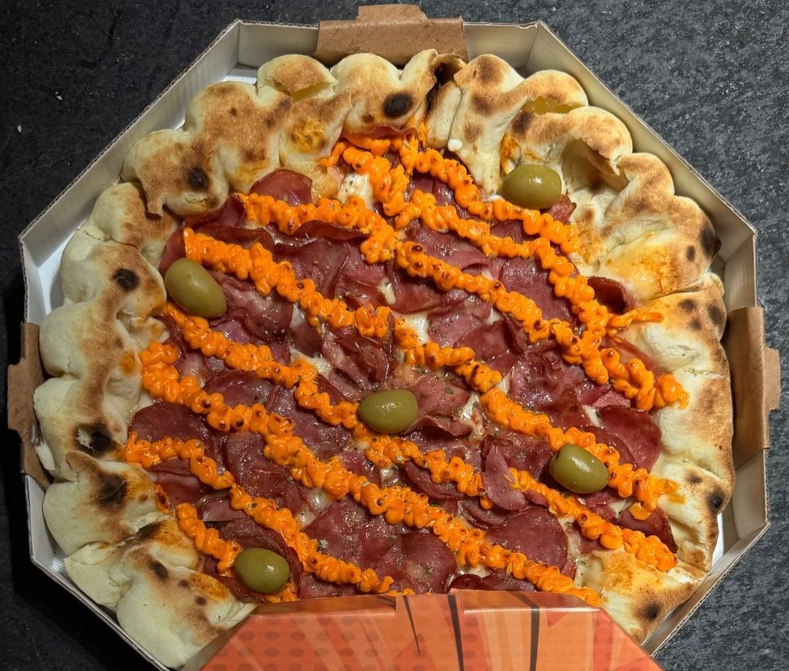
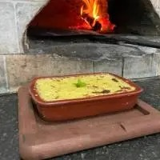

Arrumadinho
Carne do sol, Fumeiro, Bacon e Calabresa. Acompanha feijão fradinho, farofa e salada
R$ 42,90Autêntico forno a lenha Itapuã · Salvador
São 60 sabores, da Do Professor, com peperone e calabresa, à Do Chefe, com carne de sol, queijo coalho e banana-da-terra frita. Em três tamanhos, meia a meia, com até 3 sabores na Família. Delivery, retirada e salão com rodízio.

Por onde começar
Troque entre Média, Grande e Família e veja o preço mudar na hora.
Abrir o cardápio Monte seu pedidoA pizza vai para a sacola e o pedido sai pronto para o WhatsApp.
Montar agora Meia a meiaComo funciona o preço quando cada metade é de um sabor.
Entender os tamanhos O salãoA casa em Itapuã, o forno a lenha e o rodízio para vir com a galera.
Conhecer a casaSabores com a cara da casa
Entre os 60 sabores, alguns só existem aqui: a Do Professor, com peperone e calabresa; a Do Chefe e a Sertaneja, com queijo coalho e banana-da-terra frita; a Nordestina, com purê de aipim; e a Lampião e Maria Bonita, com carne de sol e rúcula.
Ver todos os saboresQuadro da casa Média 30 cm
Também em Grande (35 cm) e Família (40 cm) · preços do cardápio digital da casa


Do forno a lenha
“Deliciosas pizzas, feitas com ingredientes da maior qualidade, assada no tradicional forno a lenha.”Pizzaria do Professor, na ficha do Google
Quem prova repara na massa: Pizzas de massa fina, crocante, feitas no forno a lenha e com bons ingredientes.
(Shade A., no Google). O mesmo forno aparece aceso atrás do escondidinho, na foto do cardápio da casa.
Tamanhos e meia a meia
Com mais de um sabor, vale o preço do sabor mais caro. Bordas recheadas a partir de + R$ 11,00. Tabela completa
Monte seu pedido
Escolha o tamanho, os sabores e a borda. A pizza vai para a sacola com o preço certo, e a mensagem sai organizada para o WhatsApp da casa, sem comissão de aplicativo e sem ninguém precisar perguntar tudo de novo.
1Tamanho
2Sabores até 2 sabores
3Borda
Com mais de um sabor, vale o preço do sabor mais caro, como no cardápio digital da casa. A borda soma ao valor.
Além da pizza
Arrumadinho, escondidinhos de aipim, bolinho de charque com banana e o suco de laranja espremido na hora.

Carne do sol, Fumeiro, Bacon e Calabresa. Acompanha feijão fradinho, farofa e salada
R$ 42,90Acompanha purê de aimpim, camarão refolgado, mussarela e parmesão.
R$ 49,90Acompanha purê de aimpim, carne de fumeiro frita, mussarela e parmesão.
R$ 42,908 unidades
R$ 26,908 unidades
R$ 38,901 litro, espremido na hora
R$ 19,90Quem já pediu
Pizzas de massa fina, crocante, feitas no forno a lenha e com bons ingredientes.
Melhor pizza que já comi,simplesmente sensacional. A borda recheada é coisa de outro mundo,pretendo voltar muitas e muitas vezes.
Ambiente familiar, ótimo atendimento, comida deliciosa.
Trechos de avaliações exibidos na ficha da Pizzaria do Professor no Google, com o texto como foi escrito.
Galeria
Em casa ou na casa
Pedido mínimo de R$ 25 para entrega. A taxa muda por bairro: confirme na conversa.
Como funciona a entregaSalão com rodízio, petiscos e o forno a lenha. O Google resume a casa como Ponto de encontro rústico e acolhedor com petiscos, pizzas artesanais e refeições, além de cervejas e música.
Horário na bio do Instagram: Todos os dias das 17h às 00h
Dúvidas frequentes
Sim. A Média (30 cm) e a Grande (35 cm) aceitam até 2 sabores, e a Família (40 cm), até 3. Com mais de um sabor, vale o preço do sabor mais caro.
O cardápio digital da casa informa de 40 minutos a 1 hora para entrega e 40 minutos para retirada.
O pedido mínimo para entrega é de R$ 25. A taxa muda por bairro: confirme a do seu pelo WhatsApp (71) 99163-1900.
A bio do Instagram da casa diz “Todos os dias das 17h às 00h”. Em feriados e datas especiais, confirme pelo WhatsApp.
Sim, a casa anuncia o rodízio no Instagram. O valor do rodízio não está publicado: pergunte pelo WhatsApp.
Na entrega ou na retirada, a casa aceita cartão de débito e de crédito e dinheiro. Outras formas, confirme na conversa.
Peça agora
Monte a pizza, escolha os sabores e a borda e mande o pedido pronto para o WhatsApp da casa. Ou passe na R. da Ilha, 56, em Itapuã.